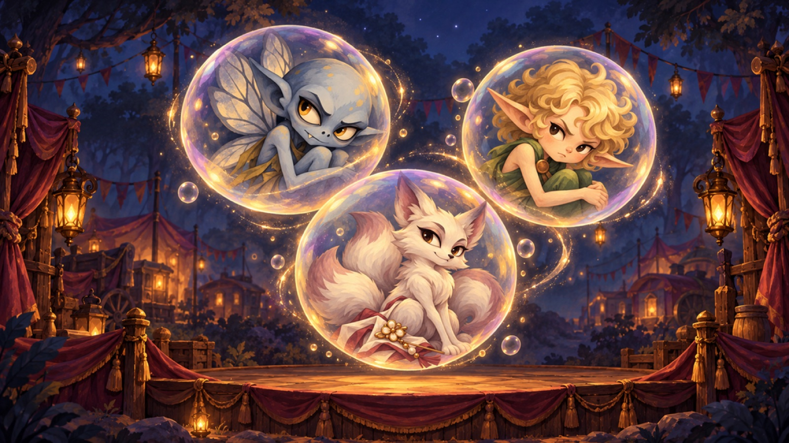
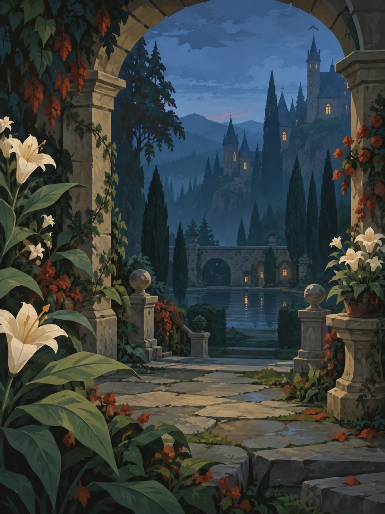

Ловец чудес
v1.0.3Опускайте пузыри на сцену Каравана и соединяйте одинаковые Чудеса. Продумывайте цепочки слияний и не дайте полю переполниться.
Об игре и скриншоты →Тайны Завесы
Меняйте соседние фишки местами, собирайте ряды из трёх символов и выполняйте цели за отведённые ходы. Открывайте страницы книги странствий.
Скачать для Windows · ZIP
Иллюстрированная match-3 головоломка по миру Риты Хоффман. Собирайте травы, руны и лилии, убирайте препятствия и доставляйте реликвии. Между уровнями открывайте сюжетные страницы, коллекцию и новые места.
Помимо кампании доступны бесконечные испытания, свободная игра и испытание дня. В сложной ситуации помогут инструменты, а при отсутствии ходов поле перемешивается бесплатно. Прогресс и незавершённые партии сохраняются на устройстве.

Опускайте пузыри на сцену Каравана и соединяйте одинаковые Чудеса. Продумывайте цепочки слияний и не дайте полю переполниться.
Об игре и скриншоты →